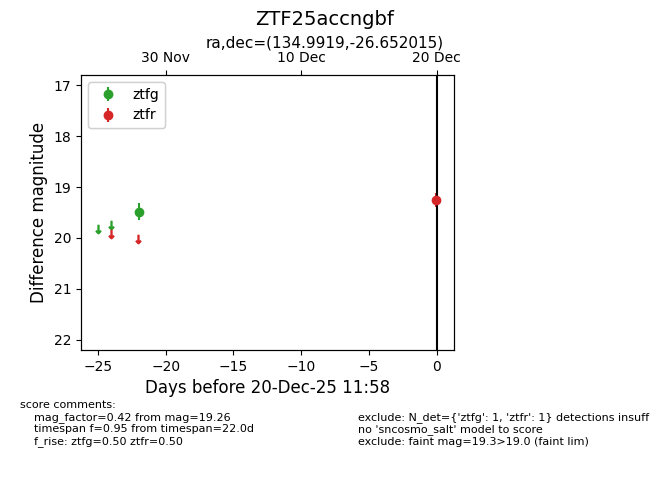
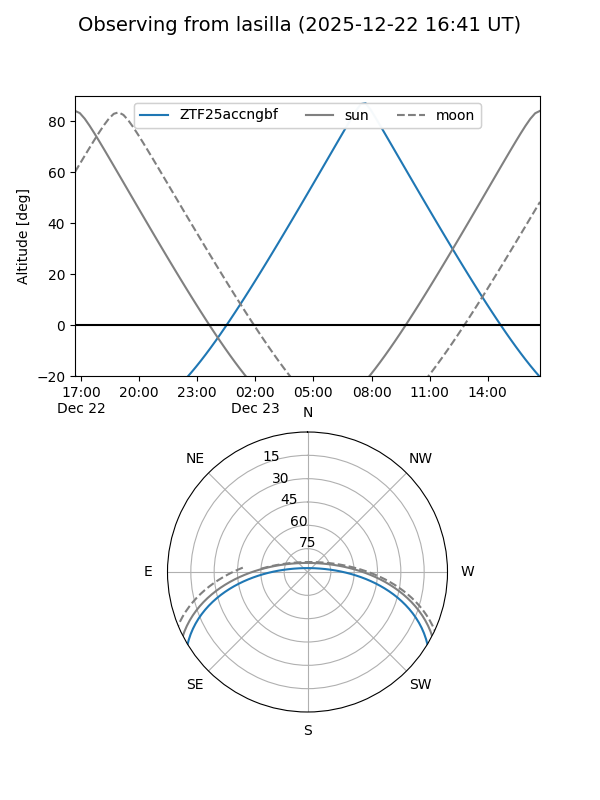
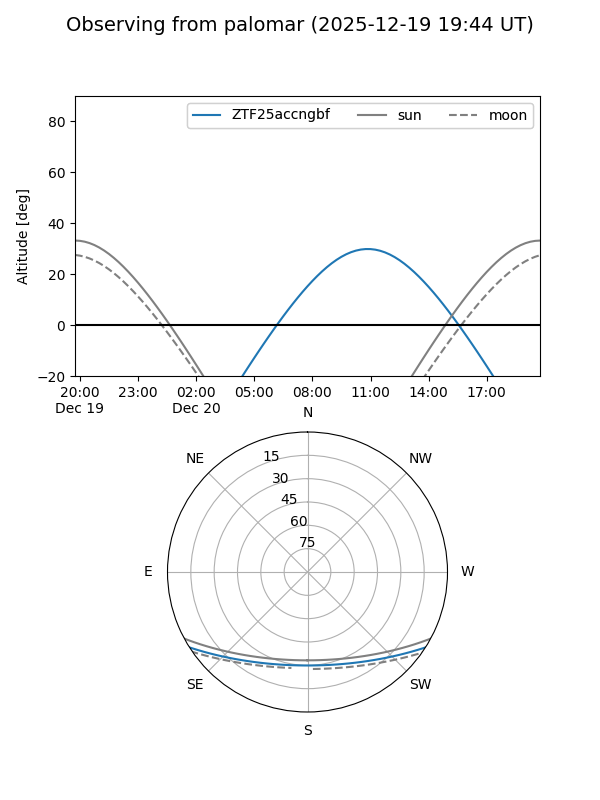

ZTF25accngbf
Target ZTF25accngbf at 2025-12-20 11:59
Aliases and brokers:
FINK: fink-portal.org/ZTF25accngbf
Lasair: lasair-ztf.lsst.ac.uk/objects/ZTF25accngbf
ALeRCE: alerce.online/object/ZTF25accngbf
alt names
ZTF25accngbf (ztf,fink_ztf)
Coordinates:
equatorial (ra, dec) = 134.9919,-26.65202
equatorial (HMS+DMS) = 08:59:58.07,-26:39:07.25
galactic (l, b) = (252.0734,+12.62260)
Flags:
Photometry:
last ztfg=19.48, ztfr=19.26
1 ztfg, 1 ztfr detections
Lightcurve

Visibility


Additional plots